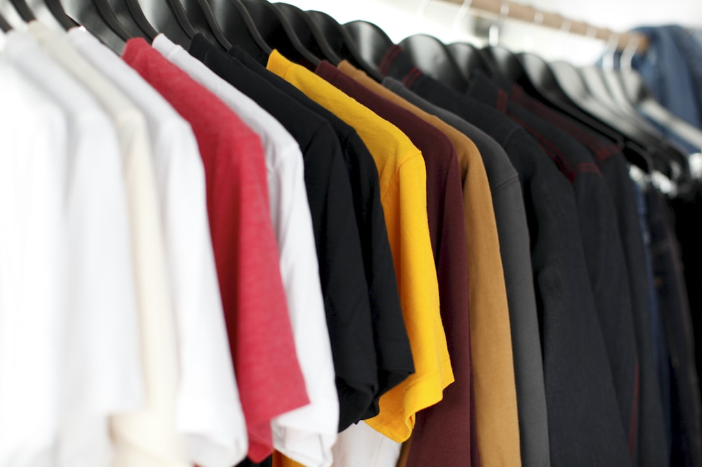

Natural Dye Alchemy
Botanical Dyeing for Wool: Forest Foraging & Mordant Chemistry
An exhaustive investigation into harvesting wild madder roots, walnut hulls, and oak galls, exploring lightfast organic color bonding with wool keratin fibers.
Read Monograph →